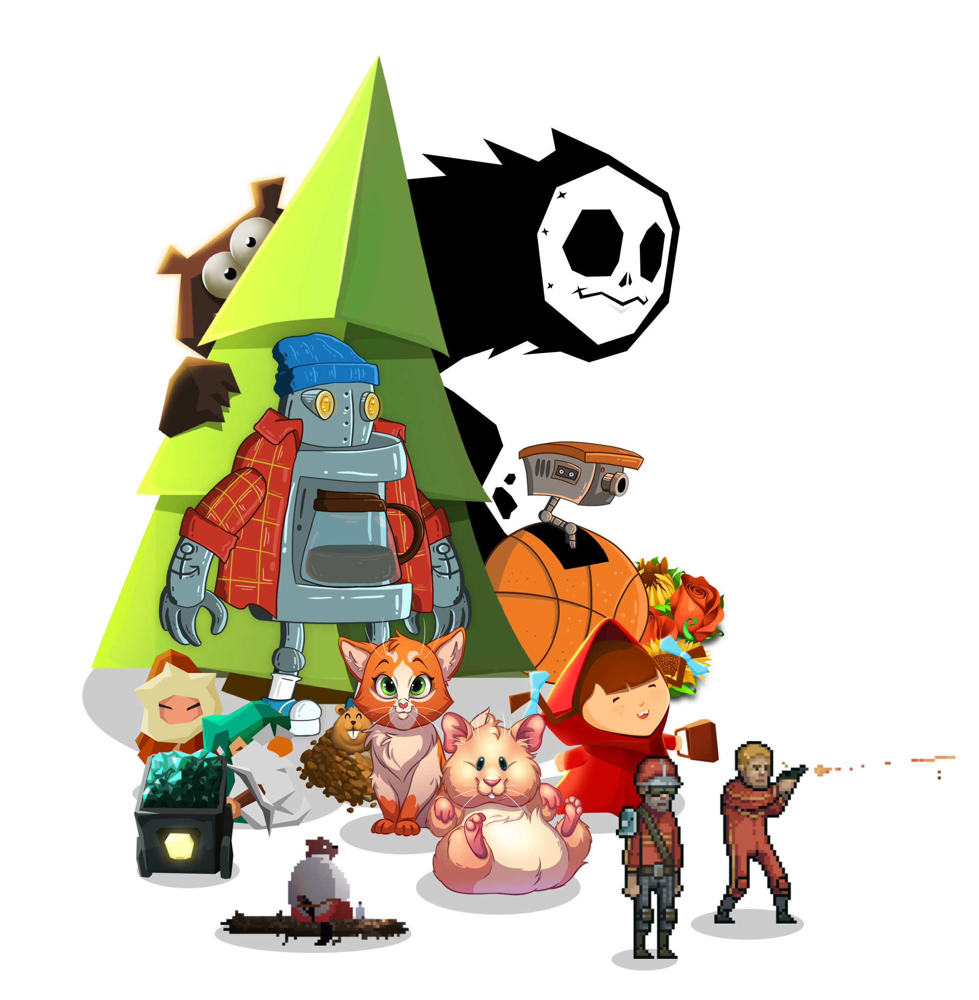
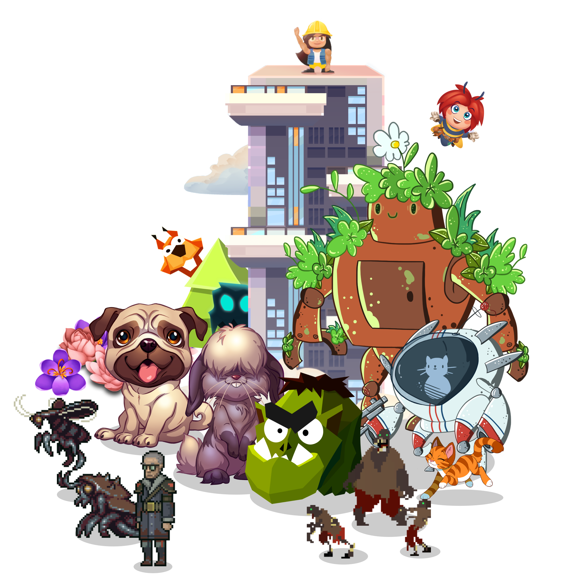

<div class="section hero center blackwhite" style='background-image: url("/assets/images/hero/plane-hero-background.jpg");'>
	<div class="container">
		<div class="row">
			<div class="left">
				<div class="column one-half">
					<h2>Features</h2>
					<p>Defold is a turn-key solution, providing everything you need to build a game.</p>
				</div>
			</div>
		</div>
	</div>
</div>

<div class="section dark">
	<div class="container">
		<div class="row">
			<div class="column one-third">
				<h4>Animation</h4>
				<ul class="checkmark">
					<li>Flip book animations for sprites, GUI nodes and particles</li>
					<li>Spine bone animations with full support for blending</li>
					<li>Keyframe events</li>
					<li>Inverse kinematics in keyframes and dynamically scriptable</li>
					<li>All sprite and GUI properties can be animated</li>
					<li>Predefined or custom easing functions for all property animation</li>
				</ul>
				<h4>Cross-platform</h4>
				<ul class="checkmark">
					<li>One click deployment to 6 target platforms (iOS, Android, HTML5, OS X, Windows, Linux) from the same code and content</li>
					<li>Additional platforms such as Steam and Facebook Instant Games supported via extensions</li>
					<li>Editor and tools running on Mac OS X (10.7 Lion or later), Windows 7 and later, Linux (Ubuntu LTS and Debian 7 has been verified to work)</li>
				</ul>
				<h4>Optimization</h4>
				<ul class="checkmark">
					<li>Small engine overhead</li>
					<li>Fast build times. All build targets, even HTML5, are completed in seconds</li>
					<li>Static content dependencies gives automatic resource management. Only used assets are included in game builds</li>
					<li>Sprite packing to atlases</li>
					<li>Per platform configurable texture compression</li>
					<li>Dynamic batching in the render pipeline</li>
					<li>Asynchronous (or synchronous) loading of asset data</li>
				</ul>
			</div>
			<div class="column one-third">
				<h4>Graphics</h4>
				<ul class="checkmark">
					<li>Fully scriptable rendering pipeline with low level access</li>
					<li>Custom materials and shaders</li>
					<li>Particle effects editor with live previewing of emitter and modifier behavior</li>
					<li>Curve editor for controlling particle parameter changes over particle lifespan</li>
					<li>Tile editor for building 2D level geometry</li>
					<li>GUI editor</li>
					<li>Layered GUI with text, images and pie nodes</li>
					<li>GUI clipping/stencil masks</li>
					<li>GUI image nodes support slice-9 texturing</li>
					<li>Automatic GUI layout and support for orientation changes</li>
					<li>Bitmap and distance field fonts</li>
					<li>Truetype, Opentype and BMFont supported</li>
				</ul>
				<h4>Physics</h4>
				<ul class="checkmark">
					<li>2D and 3D physics (Box 2D and Bullet) fully integrated</li>
					<li>Shape based and ray-cast collision detection</li>
					<li>Precise collision detection for tilemaps</li>
					<li>Static, dynamic and kinematic (scriptable) physics objects</li>
					<li>Robust triggers</li>
					<li>Joints support</li>
				</ul>
				<h4>Extensions</h4>
				<ul class="checkmark">
					<li>Google and Apple push notification APIs</li>
					<li>Google, Apple and Facebook in-app purchases APIs</li>
					<li>Facebook SDK APIs</li>
					<li>Google Play Game Services</li>
					<li>Firebase Analytics</li>
					<li>HTTP and Lua socket network APIs</li>
				</ul>
			</div>
			<div class="column one-third">
				<h4>Workflow</h4>
				<ul class="checkmark">
					<li>Turn-key software with no dependencies on other programs. No need for Xcode for iOS deployment</li>
					<li>Hot reloading of updated assets and logic</li>
					<li>Wireless hot reloading, debugging and visual profiling on device</li>
					<li>Scene editor for assembling and laying out assets and logic</li>
					<li>Automatic refactoring of assets</li>
					<li>Prefab construction of game assets with collections and GUI with templates</li>
					<li>Stand alone build pipeline for custom workflows</li>
					<li>Headless engine for automated testing</li>
					<li>Library sharing between projects</li>
					<li>All data in easily merging text files</li>
				</ul>
				<h4>Debug & test</h4>
				<ul class="checkmark">
					<li>Hot reload with custom Lua hooks for setup and inspection</li>
					<li>Live on-screen visual profiler</li>
					<li>Remote web-based profiler with visual frame sampling</li>
					<li>Lua debugging from within the editor</li>
					<li>Built-in video capture of game footage</li>
					<li>Native crash log API:s</li>
				</ul>
				<h4>Scripting</h4>
				<ul class="checkmark">
					<li>Lua language fully integrated for expressing game logic safely and with good performance</li>
					<li>Engine supports reactive-style Lua scripting for low overhead and great performance</li>
					<li>Asynchronous communication between game objects</li>
				</ul>
				<h4>Audio</h4>
				<ul class="checkmark">
					<li>Ogg and Wav sound support</li>
					<li>Hierarchy of mixers, fully scriptable</li>
				</ul>
			</div>
		</div>
	</div>
</div>

<div class="section hero light center" style='background-image: url("/assets/images/hero/orange-bg.jpg");'>
	<div class="container">
		<div class="row">
			<div class="columns four">
				
			</div>
			<div class="columns four">
				<h2>Ready to create something awesome?</h2>
				<br/>
				{% include primary_button.html link="https://d.defold.com" text="Download for free" %}
			</div>
			<div class="columns four">
				
			</div>
		</div>
	</div>
</div>
